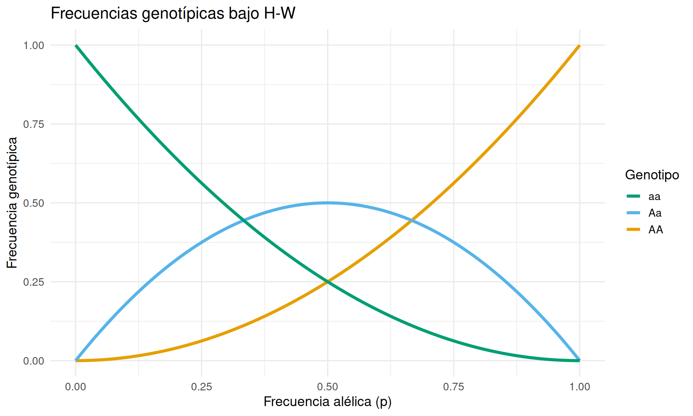
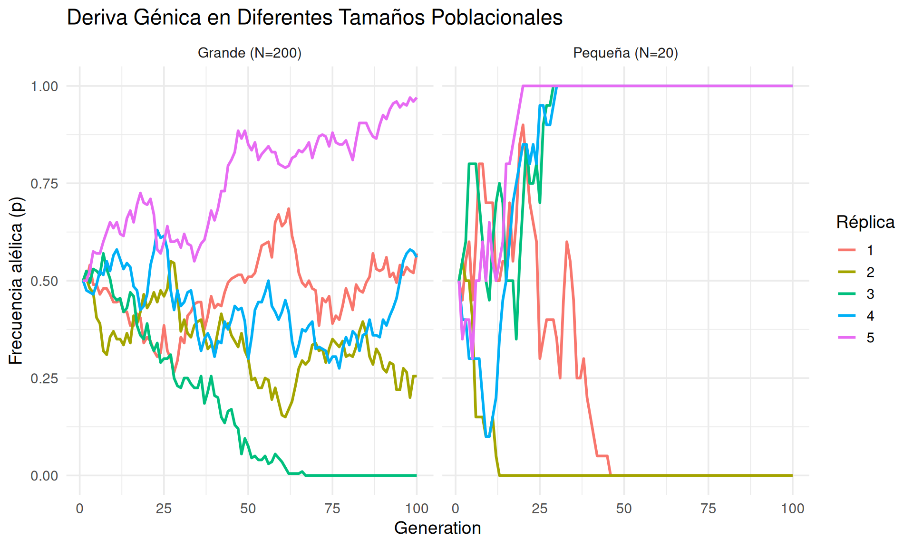
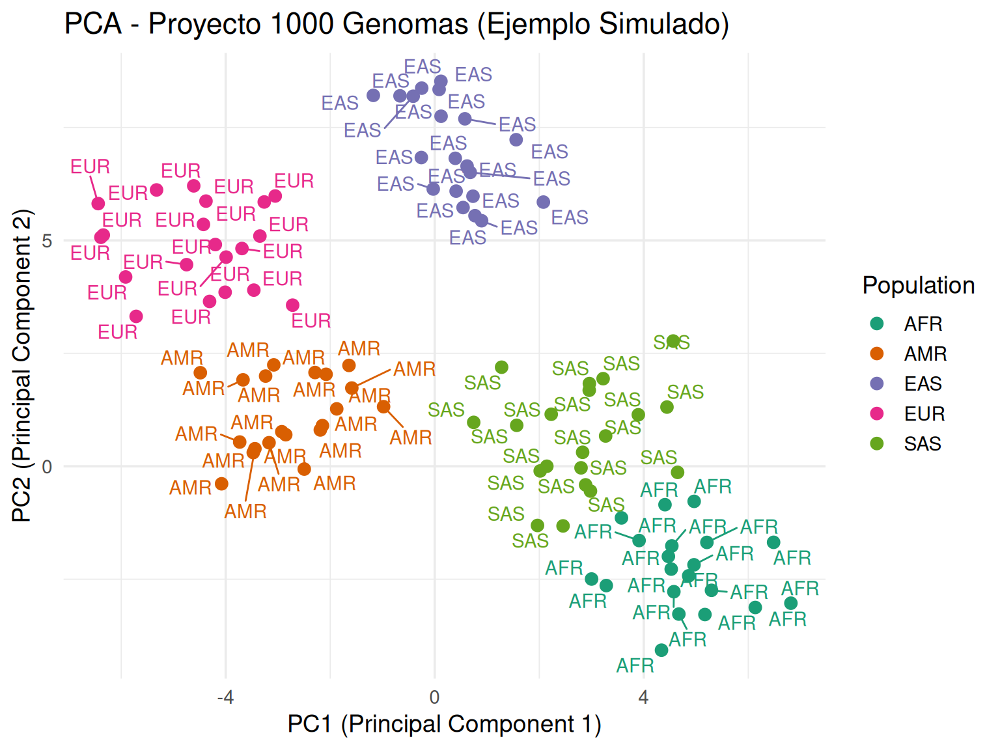
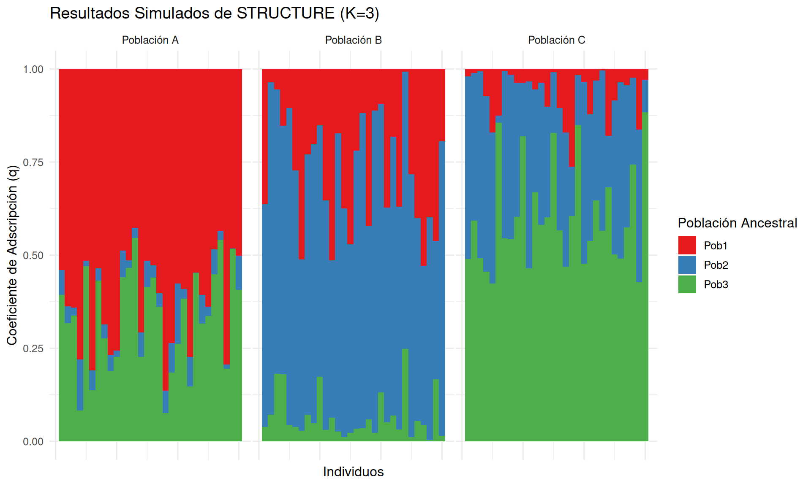
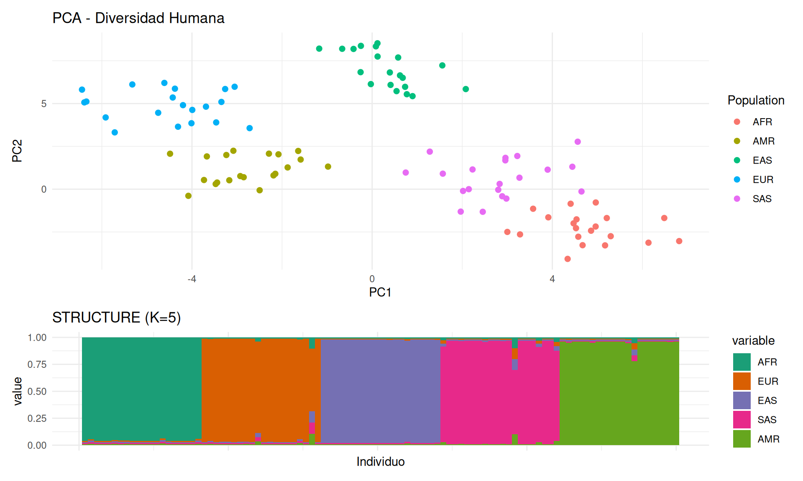
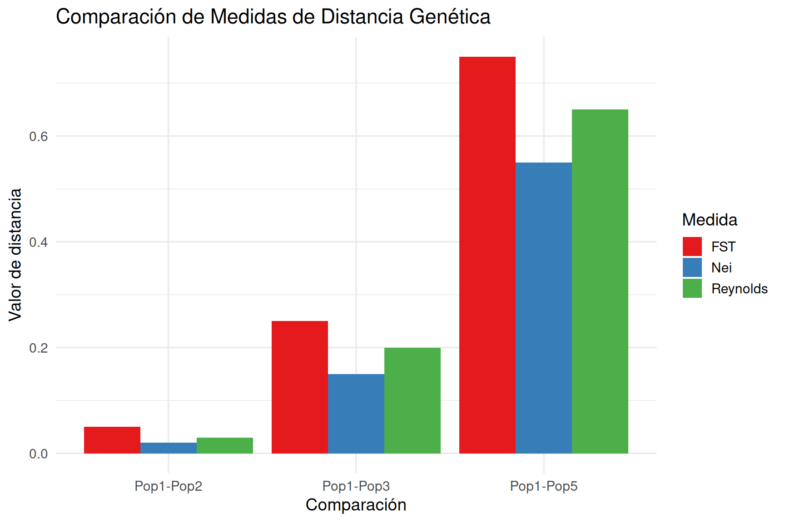
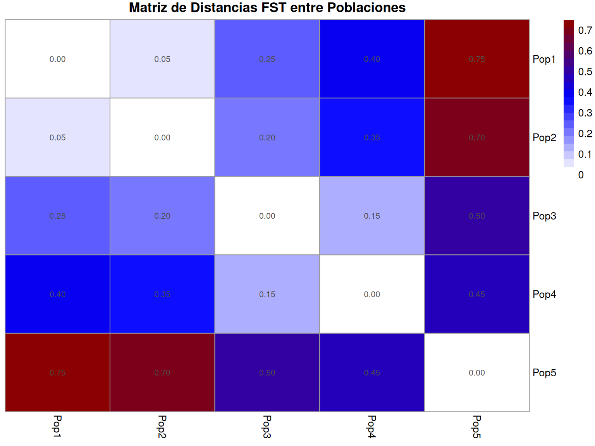

| Estadística | Descripción | Fórmula | Interpretación |
|---|---|---|---|
| \(F_{IT}\) | Endogamia total en individuos | \(\frac{H_T - H_I}{H_T}\) | Desviación de H-W en toda la población |
| \(F_{IS}\) | Endogamia dentro de poblaciones | \(\frac{H_S - H_I}{H_S}\) | Déficit de heterocigotos dentro de poblaciones |
| \(F_{ST}\) | Diferenciación entre poblaciones | \(\frac{H_T - H_S}{H_T}\) | Proporción de diversidad debida a diferencias entre poblaciones |
Genética de Poblaciones y Farmacogenética
Sergio Melgar
Introducción a la Genética de Poblaciones
- La genética de poblaciones estudia la variación genética dentro y entre poblaciones.
- Se enfoca en la frecuencia de los alelos y genotipos y cómo cambian con el tiempo.
- Conceptos clave:
- Frecuencia alélica: Proporción de un alelo específico en una población.
- Frecuencia genotípica: Proporción de un genotipo específico en una población.
- Equilibrio de Hardy-Weinberg: Un modelo nulo que describe una población no evolutiva.
Equilibrio de Hardy-Weinberg
Principio básico:
\[ p^2 + 2pq + q^2 = 1 \]
Donde: - \(p\) = frecuencia del alelo A
\(q\) = frecuencia del alelo a (\(q = 1 - p\))
\(p^2\) = frecuencia de AA
\(2pq\) = frecuencia de Aa
\(q^2\) = frecuencia de aa
Equilibio Hardy-Weinberg
\[ p^2 + 2pq + q^2 = 1 \]
Frecuencias alélicas a genotípicas suponiendo equilibrio H-W”
Equilibrio Hardy-Weinberg
Selección

Selección
- La cantidad máxima de hijos en la siguiente generación está medida por la aptitud, adecuabilidad o “fitness”
- El coeficiente de selección s es la reducción en la aptitud en un genotipo.
- La selección a favor de un homocigótico permite un aumento de la frecuencia del alelo que porta.
Flujo génico (migración)
- El flujo génico permite el intercambio de alelos entre poblaciones y su consecuencia es la homogenización de las mismas.
Deriva génica

¿Qué es la Deriva Génica?
- Cambio aleatorio en las frecuencias alélicas entre generaciones
- Efecto más pronunciado en poblaciones pequeñas
- Uno de los mecanismos evolutivos fundamentales
- Concepto desarrollado por Sewall Wright (1931)
Características
- No direccional: Los cambios son aleatorios
- Irreversible: Cuando se alcanza la fijación o pérdida del alelo
- Dependiente del tamaño poblacional:
- \(N_e\) = Tamaño poblacional efectivo
- Resultados posibles:
- Fijación (\(p=1\))
- Pérdida (\(p=0\))
- Fluctuación continua
Deriva en Poblaciones Pequeñas vs. Grandes
Deriva génica
Introducción a la Estructura Poblacional
- Problema central: Identificar agrupamientos genéticos en poblaciones naturales
- Aplicaciones:
- Estudios de ancestría
- Conservación de especies
- Epidemiología genética
- Agricultura (mejoramiento de cultivos)
Métodos de Análisis
Dos enfoques complementarios:
- PCA (Análisis de Componentes Principales)
- Método multivariado no paramétrico
- Reduce dimensionalidad
- STRUCTURE
- Modelo bayesiano de agrupamiento
- Asume poblaciones en equilibrio de Hardy-Weinberg
Interpretación del PCA Genético
- Cada punto = un individuo
- Ejes = Componentes principales (combinaciones lineales de SNPs)
- Varianza explicada = % de variación genética capturada
- Agrupamientos = Similitud genética
Ventajas: - Rápido computacionalmente - Visualización intuitiva - No asume modelo poblacional
Ejemplo:
Método STRUCTURE: Fundamentos
- Algoritmo bayesiano (Pritchard et al. 2000)
- Modela individuos como mezclas de K poblaciones ancestrales
- Salida clave:
- Coeficientes de adscripción (q)
- \(0 \leq q \leq 1\) por individuo
Visualización de Resultados de STRUCTURE
Ejemplo: Humanos
Estadísticas F
- Desarrolladas por: Sewall Wright (1951)
- Propósito: Cuantificar estructuración genética poblacional
- Rango: 0 (no diferenciación) a 1 (diferenciación completa)
- Aplicaciones:
- Conservación de especies
- Estudios de adaptación local
- Antropología genética
Estadísticas F
\(H_I\) : media de la f(Aa) observada. \(H_T\) : media de la f(Aa) esperada. \(H_T\) : f(Aa) esperada global.
Otras Medidas de Distancia Poblacional
1. Distancia de Nei (1972):
\[ D = -\ln \left( \frac{J_{XY}}{\sqrt{J_X J_Y}} \right) \]
Donde: - \(J_X\), \(J_Y\) = homocigosidad en poblaciones X e Y - \(J_{XY}\) = heterocigosidad entre poblaciones
2. Distancia de Reynolds (1983):
\[ \theta = \frac{(p_X - p_Y)^2}{4(1 - \sum p_i^2)} \]
Comparación de Medidas de Distancia
Visualización de Matrices de Distancia
Aplicaciones en Genómica de Poblaciones
- Identificación de poblaciones discretas
- Detección de selección natural:
- FST outliers
- Comparación con distribución neutral esperada
- Diseño de estrategias de conservación
- Estudios de asociación genómica (GWAS):
- Control de estructura poblacional
Farmacogenética: Individualizando la Medicina
- La farmacogenética examina cómo la variación genética de un individuo afecta su respuesta a los fármacos.
- El objetivo es optimizar la terapia farmacológica, maximizando la eficacia y minimizando los efectos adversos.
- Genes importantes en farmacogenética codifican:
- Enzimas metabolizadoras de fármacos (p. ej., CYP450).
- Transportadores de fármacos.
- Receptores y otras dianas farmacológicas.
Citocromo P450
- La superfamilia de enzimas citocromo P450 (CYP) es fundamental para el metabolismo de muchos fármacos.
- Polimorfismos genéticos en los genes CYP pueden llevar a variaciones en la actividad enzimática:
- Metabolizadores pobres (PM): Metabolismo lento, mayor riesgo de efectos secundarios.
- Metabolizadores intermedios (IM): Metabolismo reducido.
- Metabolizadores extensos (EM): Metabolismo normal.
- Metabolizadores ultrarrápidos (UM): Metabolismo muy rápido, posible falta de eficacia del fármaco.
Gen CYP2D6: Implicaciones Clínicas
- El gen CYP2D6 es altamente polimórfico y metaboliza aproximadamente el 25% de los fármacos comunes.
- Ejemplos de fármacos afectados por la variación en CYP2D6:
- Antidepresivos (p. ej., fluoxetina, paroxetina).
- Antipsicóticos (p. ej., haloperidol, risperidona).
- Analgésicos opioides (p. ej., codeína, tramadol).
- Betabloqueantes (p. ej., metoprolol).
Genética de Poblaciones de CYP2D6
- La frecuencia de los alelos de CYP2D6 varía significativamente entre diferentes poblaciones.
- Por ejemplo, los alelos asociados con el fenotipo de metabolizador ultrarrápido son más comunes en algunas poblaciones del norte de África y Oriente Medio.
- Estas diferencias poblacionales tienen implicaciones importantes para la dosificación de fármacos a nivel global.
Otros Genes Farmacogenéticos Relevantes
- CYP2C19: Metaboliza antidepresivos, inhibidores de la bomba de protones, etc.
- CYP2C9: Metaboliza warfarina, AINEs, etc.
- SLCO1B1: Codifica un transportador de estatinas; polimorfismos asociados con miopatía inducida por estatinas.
- VKORC1: Codifica la diana de la warfarina; polimorfismos influyen en la dosis requerida.
Variación Genética entre Poblaciones
- Factores evolutivos como la deriva genética, el flujo génico y la selección natural contribuyen a las diferencias en las frecuencias alélicas entre poblaciones.
- La historia migratoria y los eventos de cuello de botella poblacional también pueden tener un impacto significativo.
- Comprender esta variación es crucial para aplicar la farmacogenética de manera equitativa a nivel mundial.
Implicaciones para la Medicina Personalizada
- La genética de poblaciones proporciona el contexto para interpretar la información farmacogenética individual.
- Al conocer las frecuencias alélicas en diferentes grupos poblacionales, se pueden desarrollar pautas de dosificación más precisas y culturalmente sensibles.
- La investigación continua es esencial para descubrir nuevas variantes farmacogenéticas y comprender su distribución global.
Conclusiones
- La genética de poblaciones es fundamental para entender la variación en genes farmacogenéticos.
- Las diferencias en las frecuencias alélicas entre poblaciones tienen implicaciones clínicas importantes para la respuesta a los fármacos.
- La integración de la genética de poblaciones en la farmacogenética es crucial para avanzar hacia una medicina más personalizada y equitativa.